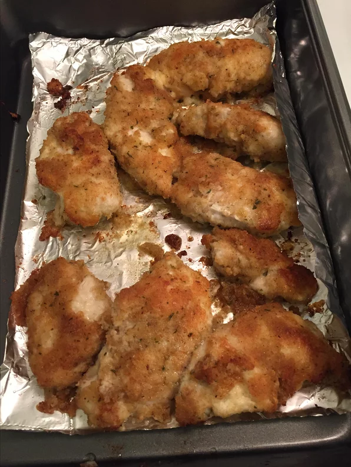

Tender Italien Baked Chicken

Description
This is a thick, rich soup with tons of flavor. Something I whipped up off the top of my head, with things I had on hand. Super easy, quick, and a great way to use squash. An instant hit at my house.
Ingredients
-
1 small onion, chopped
-
1 medium carrot, chopped
-
2 medium potatoes, cubed
-
salt and freshly ground black pepper to taste
Steps
-
Melt the butter in a large pot, and cook the onion, celery, carrot, potatoes, and squash 5 minutes, or until lightly browned. Pour in enough of the chicken stock to cover vegetables. Bring to a boil. Reduce heat to low, cover pot, and simmer 40 minutes, or until all vegetables are tender.
-
Transfer the soup to a blender, and blend until smooth. Return to pot, and mix in any remaining stock to attain desired consistency. Season with salt and pepper.
Back to homepage